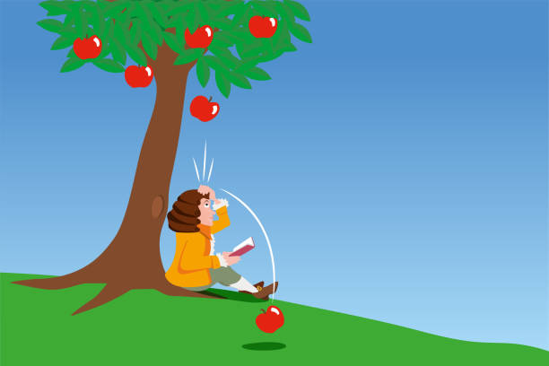
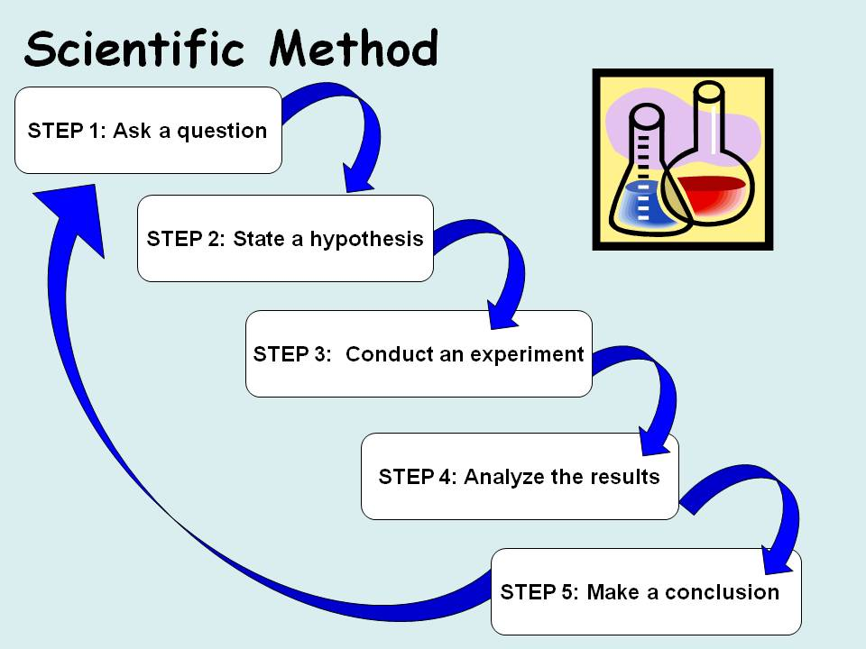
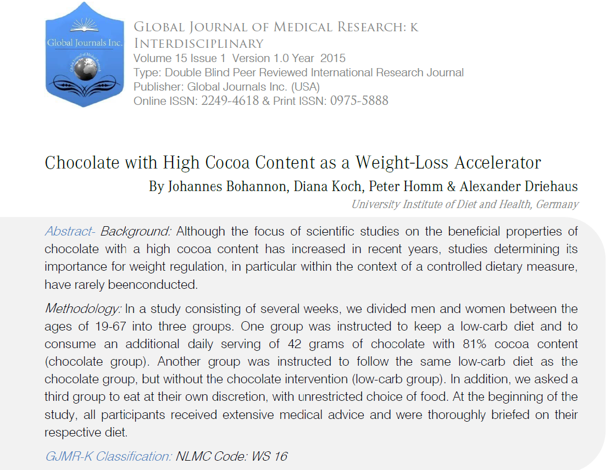
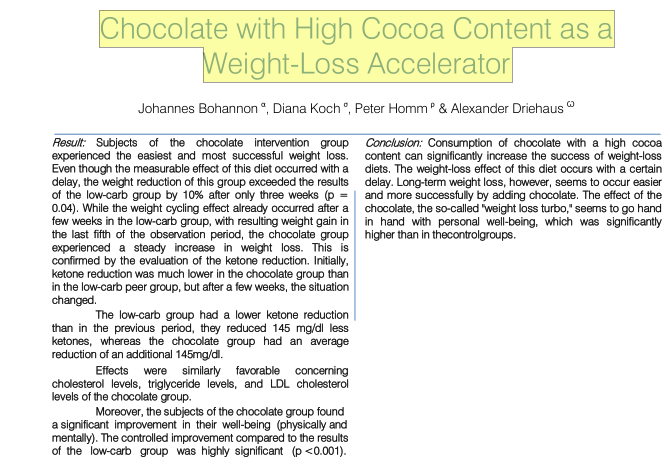
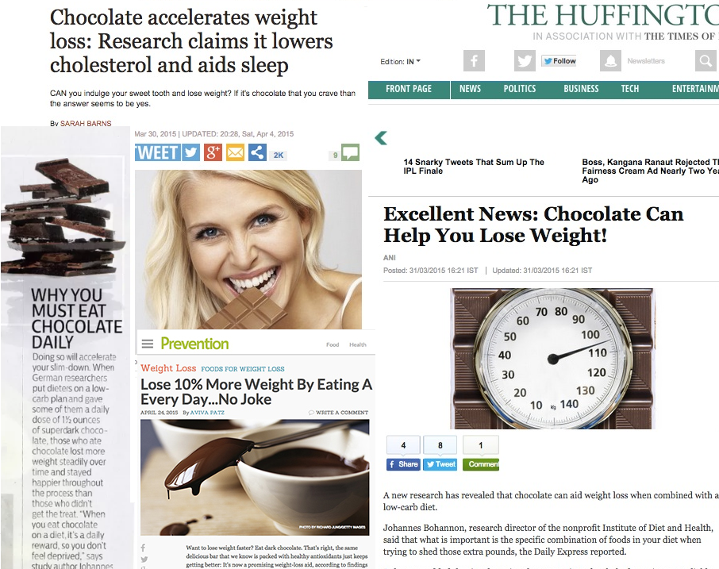
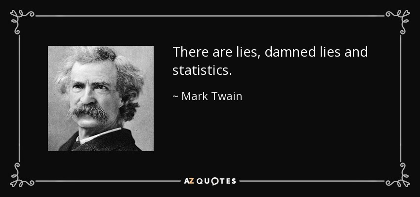

Welcome to Statistical Analysis 1. We are your instructors
Mark Himmelstein
Lab Instructor
PhD in Quantitative Psychology (2023)
Jess Helmer
Lecture instructor
Third Year PhD student in Quantitative Psychology
David Budescu
My PhD advisor
Now retired
Heining Cham
Professor, Fordham University
Taught plurality of my stats courses
Leah Feuerstahler
Associate Professor, Fordham University
Supervised much of my early teaching
Jim Roberts
Former instructor of this course
Now retired
Lecture:
Mondays and Wednesdays 3:30pm - 5:25pm, JS Coon 250
Instructor:
Mark Himmelstein
Office Hours: Tuesdays 1:00pm - 2:00pm JS Coon 235
Contact: mhimmelstein3@gatech.edu
Lab:
Fridays 2:000pm - 4:45pm, JS Coon 248
Instructor:
Jess Helmer
Office Hours: Fridays 1-2pm JS Coon 241 or Zoom
Contact: jhelmer3@gatech.edu
This course will prepare you for:
Statistical Analysis II and future quantitative coursework
Participation in research projects in academia or industry
Critically evaluating research reported in both scientific journals and popular media
Statistics is not a solved field!
A lot of this will be familiar, but deeper, than prior undergraduate courses you have taken in statistics
Throughout this course, we will learn how to:
Explore, describe, and visualize data
Understand the relationship between probability and statistics
How to use statistical analysis to facilitate inference and decision making
Use computer simulation to help address complex problems
Compare and contrast two competing perspectives on statistical inference:
There will be six (6) homework assignments
Assigned on Fridays roughly every other week
Will cover materials from the most recent four (4) classes
Due second Thursday at 11:59pm ET after they are assigned
Submit on Canvas using Quarto
Late submissions not accepted, except in extraordinary circumstances and with prior arrangement with the instructor
You will receive feedback on your homework via Canvas
There are two midterms and one final exam which will be held in person. These are required for everyone
Non-cumulative
Each exam will be proceeded by a review
Theoretical component: Multiple choice and/or short answer questions about statistical theory (lecture material)
Applied component: Conduct brief analysis on provided data or build a simple simulation (lecture + lab material)
You may use any materials except AI!
Makeup exams only available under in extraordinary circumstances and with prior arrangement with the instructor
To get started the first week of class, write a brief introduction. Please include:
Independent research project you can work on throughout the semester
The project is best suited for students who have a dataset in hand already. But if you would like to complete the extra credit and don’t already have data, here are some datasets you can consider:
posit::conf()Posit is the compay behind RStudio, the interactive development environment (IDE) we use to access R. They hold an annual conference from September 14-16. You can register for free to attend virtually. You can get up to one (1) point of extra credit on your homework by
In lab, you will learn to use R, a popular statistical software program.
R will be required for lab assignmentsR as a calculator)Don’t use AI to do your labs, homeworks, or quizzes:
There is no required textbook for this course. Instead, I have gathered together several different textbooks that are either open source or freely available to you from the Georgia Tech library
I have provided suggested chapter readings that support the material covered in lecture. If you like learning from textbooks, I also suggest you sample each of them and decide if you want to go deeper than my suggested readings on one in particular
Poldrack, R. A. (2019). Statistical Thinking for the 21st Century. https://statsthinking21.github.io/statsthinking21-core-site/
Lane, D.M. Online Statistics Education: A Multimedia Course of Study. http://onlinestatbook.com/
Barr, Dale J. (2021). Learning statistical models through simulation in R: An interactive textbook. Version 1.0.0. https://psyteachr.github.io/stat-models-v1
Navarro, D. Learning statistics with R. https://learningstatisticswithr.com/
RCrump, M. J. C., Navarro, D. J., & Suzuki, J. (2019). Answering Questions with Data: Introductory Statistics for Psychology Students. https://www.crumplab.com/psyc3400/
Nguyen, M. (2025). Advanced modeling and data challenges (Vol. 3). Springer Cham. https://link.springer.com/book/9783032017185 OR partial Bookdown version at https://mike-data-analysis.share.connect.posit.cloud/index.html
I will post all of my slides on GitHub prior to class. But these will not be the final versions of the slides
You can’t see this content (yet), but I can! The slides will be updated to include the version with this content after class
The study of statistics is all about developing a principled language to describe and interpret somewhat unpredictable (noisy) and somewhat predictable patterns.
In some types of science, there is a clear and direct relationship between different phenomena. Put another way: we can predict one event given knowledge of another event.

In others, there are associations and differences between phenomena that are not so clear and direct, but present nonetheless.
Statistics are how we better understand those relationships.
Is the outcome of a coin flip random? Yes! At least at the limit of human knowledge and perception
Is the number of hours in a day random? Not really. It’s possible some cosmic event will change this, but we treat a day as a cycle of the earth around the sun that takes 24 hours
Is the amount time it takes for you to get from your home to campus random? Sure is! It probably takes you roughly the same amount of time every day, but varies due to unpredictable conditions like traffic, weather, your mood, etc.
Random \(\neq\) Arbitrary
Anything that isn’t perfectly predictable is subject to randomness, even things with some regularity. Statistics is all about separating the regularity from the randomness as best we can.




The chocolate study:
ARE YOU CONVINCED?!?

By the end of this course, you should be able to ask the right questions to understand both appropriate and inappropriate/misleading use of statistics.
Currently, many are concerned about the reliability of statistical results:
Null Hypothesis Significance Testing (NHST):
We are in a time of transition
This course is not a math course, but it uses math.
There will be a reasonable amount of math/algebra:
It will also help to know the basics of
Neither of these are strictly necessary for this class, and to whatever extent they are, I will review the basics. These links can provide further review:
Important to know, and a tool for understanding later concepts! But only as a tool so we can apply what we actually need to learn. We will emphasize concepts in addition to computation.